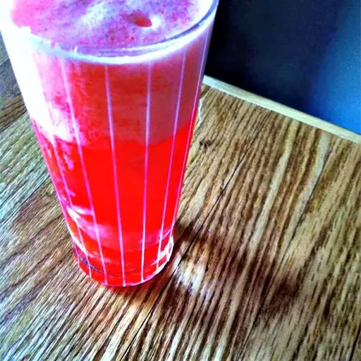

Sloe Gin Fizz Cocktail

Here's a great cocktail for your Mardi Gras party!
This refreshing cocktail will surely be a hit at your Mardi Gras party!
Description
Sloe gin, a blackthorn plum-flavored spirit, gets a dose of fizzy club soda, sugar, and lemon juice in this tart and refreshing cocktail.
Ingredients
- 2 ice cubes
- 2 fluid ounces sloe gin
- 1 fluid ounce lemon juice
- 1 teaspoon simple syrup
- 1 cup ice
- 4 fluid ounces club soda
- 1 slice lemon
Steps
- Place 2 ice cubes into a highball glass and set aside in the freezer.
- Combine sloe gin, lemon juice, and simple syrup in a cocktail shaker. Add 1 cup ice; cover and shake until the outside of the shaker is frosted. Strain into the prepared highball glass.
- Stir in club soda and garnish with a slice of lemon.